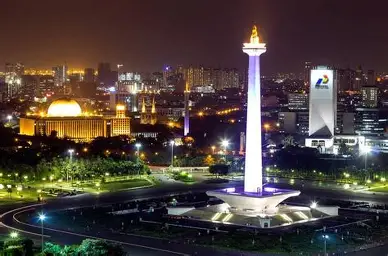
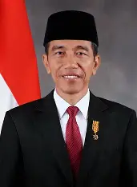

Jakarta, secara resmi bernama Daerah Khusus Ibukota Jakarta (DKI Jakarta), terletak di pesisir barat laut Pulau Jawa dan berbatasan dengan Provinsi Banten dan Jawa Barat, serta menghadap Laut Jawa di utara

Joko Widodo (Indonesia: [dʒɔkɔ widɔdɔ]; lahir 21 Juni 1961), lebih dikenal sebagai Jokowi adalah politikus dan pengusaha Indonesia yang menjabat sebagai Presiden Indonesia ketujuh dari tahun 2014 sampai 2024. Sebelumnya ia adalah anggota Partai Demokrasi Indonesia Perjuangan (PDI-P).
